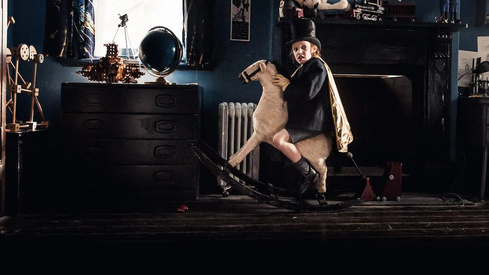
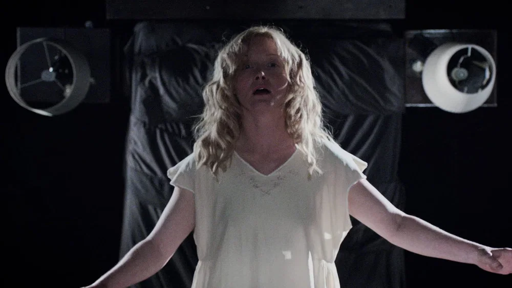
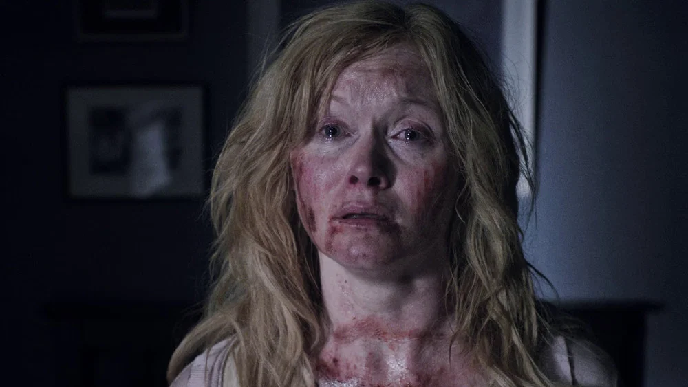

Entrando in sala per vedere The Babadook, è facile aspettarsi l’ennesimo horror costruito su porte che scricchiolano, ombre minacciose negli armadi e spaventi improvvisi a volume altissimo. Invece l’esordio al lungometraggio dell’australiana Jennifer Kent prende una strada molto più scomoda e intelligente, usando le regole del cinema del terrore come grimaldello per raccontare qualcosa che con il soprannaturale c’entra fino a un certo punto.
La storia è apparentemente semplice: Amelia (una straordinaria Essie Davis) è una madre vedova, stremata dalla solitudine e dal peso di dover crescere da sola il piccolo Samuel, un bambino iperattivo, ossessionato dai mostri e difficilissimo da gestire. Quando in casa compare un inquietante libro pop-up intitolato Mister Babadook, l’incubo prende forma: una creatura nera e allampanata inizia a perseguitarli, nutrendosi della loro angoscia.

Oltre le porte che scricchiolano
Per buona parte del film, Jennifer Kent gioca con i pesi e le misure del genere con una precisione chirurgica. La casa di Amelia diventa uno spazio claustrofobico, livido e soffocante, dove l’insonnia e l’esaurimento nervoso deformano la percezione della realtà. Il punto è che il vero orrore di The Babadook non sta tanto negli artigli del mostro, quanto nella fatica disumana di essere genitori quando il dolore non è stato elaborato. Il film ha il coraggio di mostrare qualcosa che il cinema mainstream tende quasi sempre a edulcorare: il risentimento, la stanchezza feroce, persino il rifiuto silenzioso che una madre può provare verso il proprio figlio quando questo rappresenta il promemoria vivente di una perdita insopportabile.

La grammatica rovesciata dell'esorcismo
Ed è qui che l’operazione di Kent compie il suo salto di qualità, ribaltando radicalmente la grammatica dell’esorcismo classico. In quasi tutto il cinema dell’orrore – da L’esorcista in poi – la salvezza coincide con l’espulsione: il male è un corpo estraneo che va combattuto, scacciato e annientato affinché l’ordine iniziale possa essere ristabilito. Se lo cacci fuori di casa, sei salvo.

La guarigione non arriva eliminando il mostro: il Babadook non è un'entità venuta da fuori, è il lutto, la depressione, la rabbia repressa.
Jennifer Kent sceglie la via opposta, molto più onesta e adulta. La guarigione non arriva eliminando il mostro, perché il Babadook non è un’entità venuta da fuori: è il lutto, la depressione, la rabbia repressa. È parte integrante di Amelia. Pretendere di cancellarlo significherebbe negare una fetta della propria storia. E così, nel finale, il demone non viene distrutto ma relegato in cantina: diventa il coinquilino più scomodo della casa, una presenza che non sparisce mai del tutto ma con cui si impara a convivere. Bisogna scendere regolarmente al piano di sotto, guardarlo in faccia, calmarlo e nutrirlo con i lombrichi raccolti in giardino – ovvero con la cura, il tempo e la pazienza della quotidianità – affinché resti mansueto e non torni a bussare alla porta del piano di sopra.

Imparare a dar da mangiare ai propri demoni
Certo, chi cerca il puro intrattenimento adrenalinico o la mitologia spettacolare dei franchise horror contemporanei potrebbe restare spiazzato da un film che preferisce il dramma psicologico all’accumulo di effetti. Ma è proprio questa coerenza a rendere The Babadook un’opera così incisiva: invece di offrirci la rassicurante illusione che i fantasmi possano essere sconfitti una volta per tutte, ci ricorda che l’unico modo per non farsi divorare dai propri demoni è imparare a dar loro da mangiare.

— S. R.